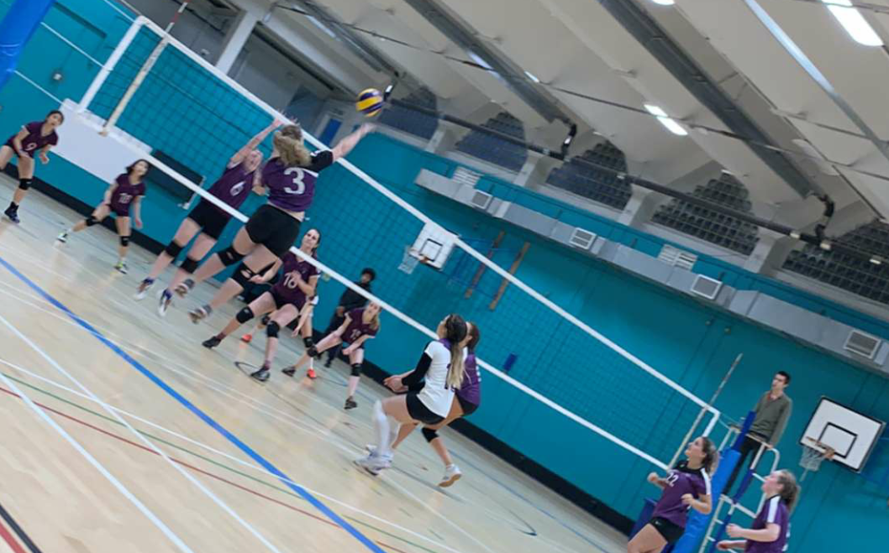

Sidari local beach volleyball league (Summer 2012, 2013 and 2014)
Leeds Beckett University Women's First Team (2016-2019): positions: Libero, outside, setter, opposite
Leeds RGA Training Team (2017-2018):
positions: libero, outside
Manchester Marvels Development Team (2019-2020):
positions: outside, libero

I was coached for 3 years by Stephen Mckeown, who is the Northern Ireland senior women's volleyball coach. From the skills i have learned with him, i have been able to input coaching techniques with my previous teams.
Leeds Beckett University women's first and reserve team (2019-2020)
North Manchester Explorers Scouts Summer Competition (2014-2019)
Having played volleyball for quite some years now, co-captaining my university volleyball team in 2018 and going on to coach the team the year after; I have some valuable experience and advice to offer to new beginners and amateur level teams.
It is not all about the competition, but about the team work and unity involved with playing volleyball successfully. Each player must know the ins and outs of their position, and their team mates roles, to fully understand how rotations can affect the play.
I can teach and offer:
Basic movements (dig, volley, spike, block, dive, serve, jump-serve)
Positions (Outside, Setter, Opposite, Middle, Libero)
Rotations (With a libero, without, 5-1 system, 6-2 system )
Tactics and techniques (Setting, blocking, pipe)
Coaching through competitive games
Team training sessions
Fitness and nutrition advice (plyometrics, cardio, agility)